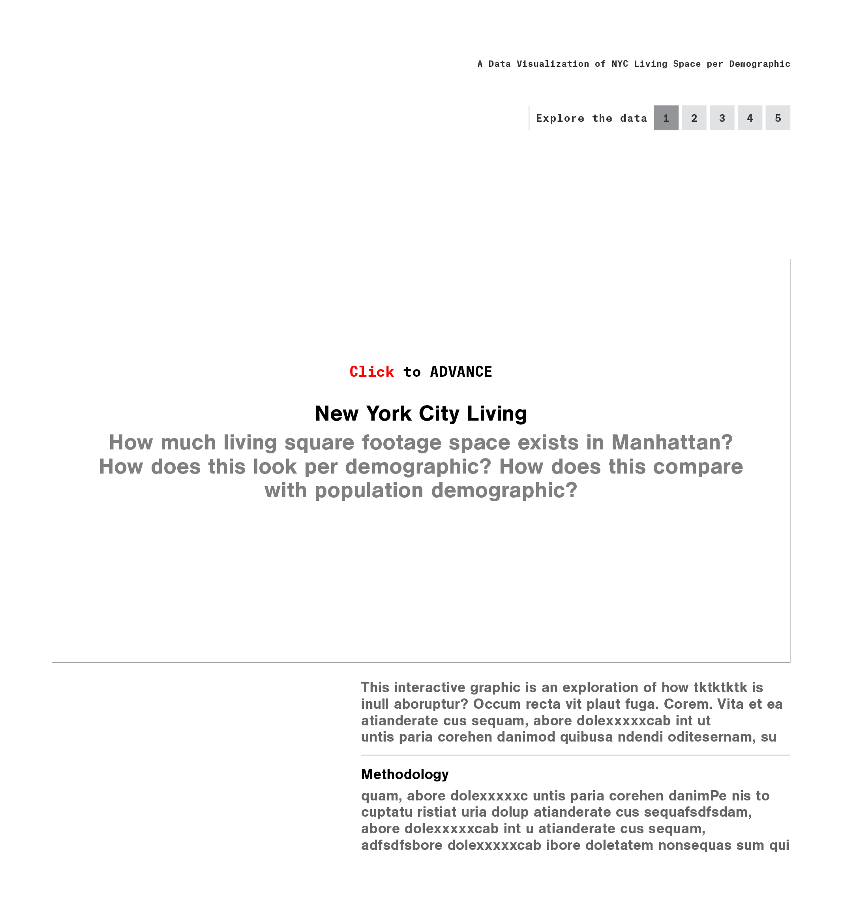
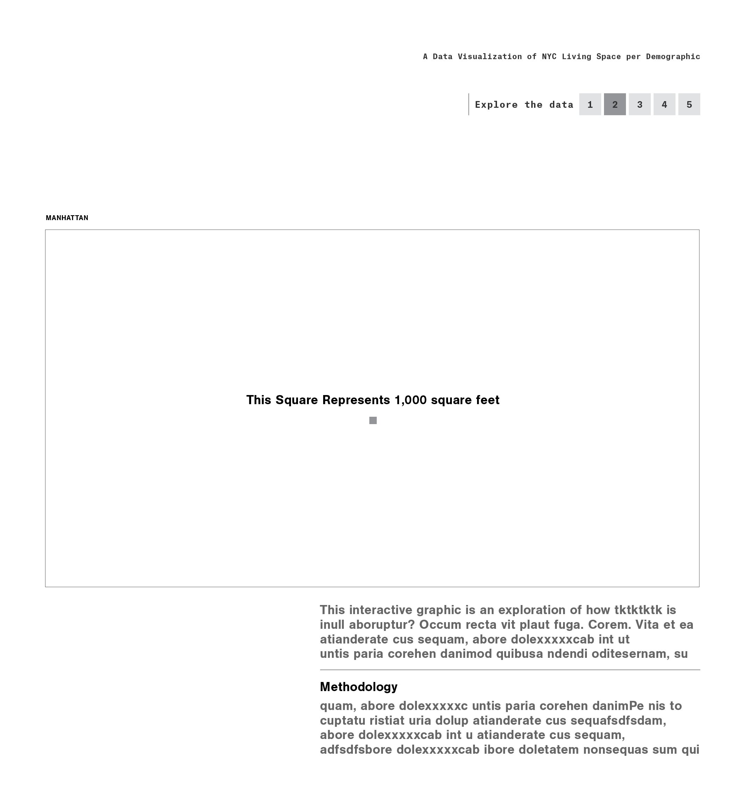
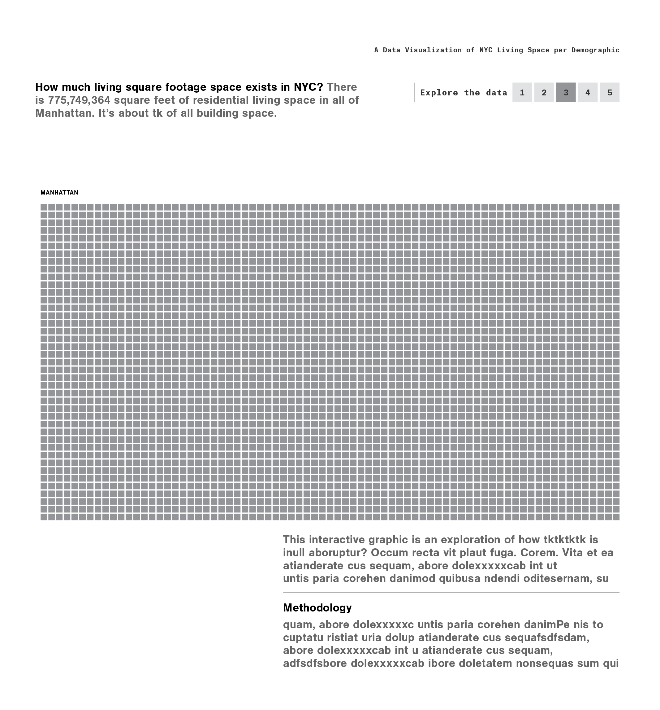
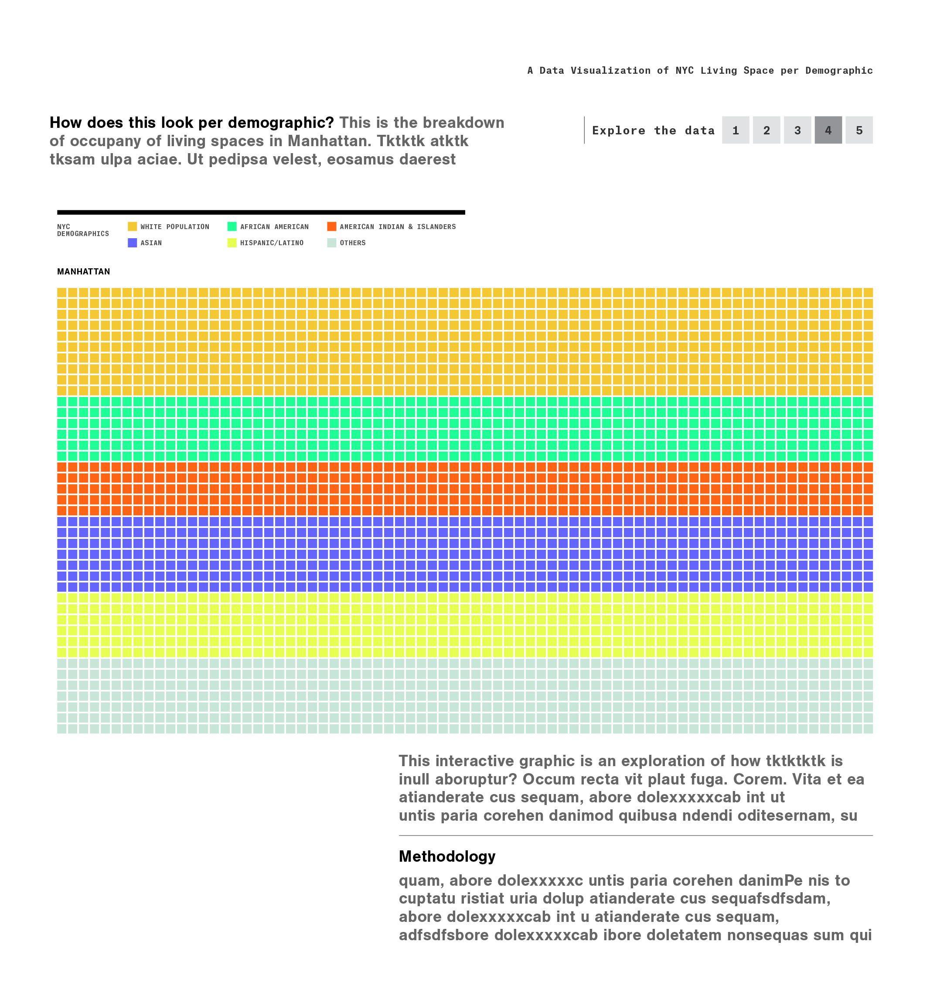
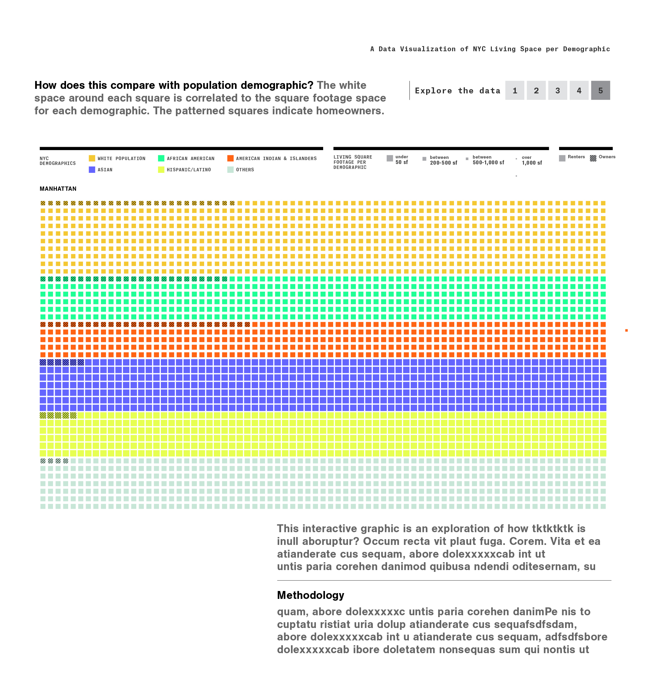
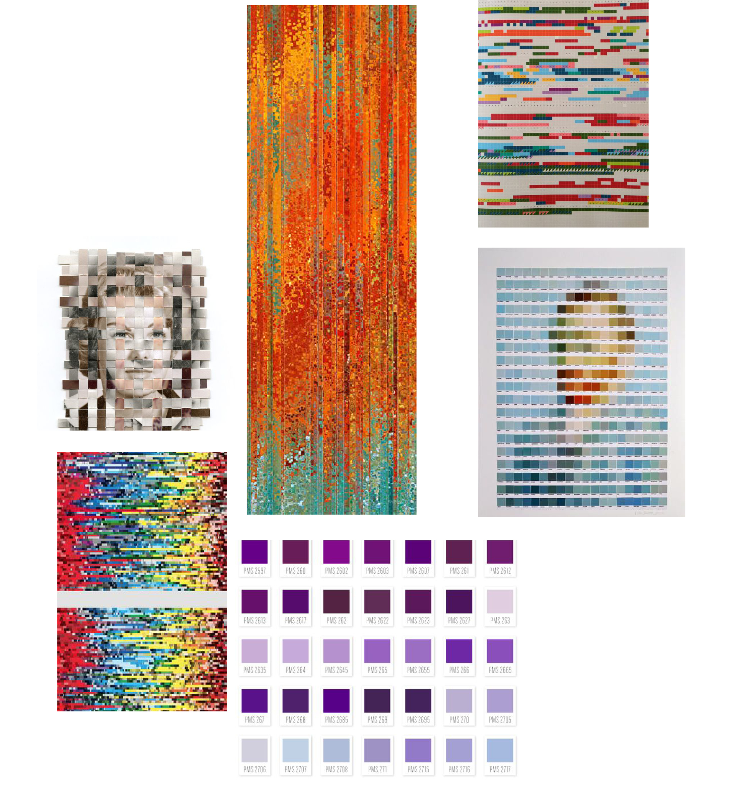

Grace Martinez // Major Studio 1: Spring 2017 // Final Project // Design Mockup
Grace Martinez // Final Project // Design Mockup





Inspiration / Sources
Inspiration for Interactivity
This inspired the kind of the breakdown of story telling with squares I'd like to do with my visualization
Possible Transition Treatment
Using the square shape
Possible Visual References for the squares
